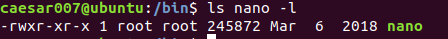
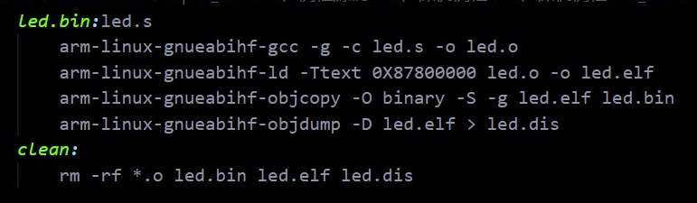

准备转专业了，汽车设计专业 。曾经跟舍友说将来做就要做那种可以——呆在咖啡馆儿、桌上一杯咖啡一台笔记本儿外加旁边的一条阳光、敲代码啦~画设计图啦~说不定哪天还能像大冰小说里圆寸设计师样偶遇他的另一半儿——的工作 ~ 虽然知道这是小说，但写的是真人真事儿，但就是稍微艺术加工了一下，但没准儿对某些人来说这就是操作指南呢，唯一缺的就是在20000人中遇见另一个也把这当成操作手册的人 ~ 言归正传，当你某些时候遇到个些奇怪的名词出现在身边可能不会在意，然后接下来的几周你突然发现它变得到处都是了，这时你知道，没错，又有一堆垃圾东西要学了。
以下是Linux开发中会常用到的一些该系统的相关知识，主要是了解终端的使用和Linux的文件结构；为了习惯将来的英文环境，以下部分内容使用英文hiehiehie
Popular shell command
| command | function |
|---|---|
| ls | 目录信息查看 |
| cd | 目录切换 |
| pwd | 当前路径显示 |
| uname | 系统信息查看 |
| clear | 清理屏幕 |
| cat | 显示文件内容 |
| sudo | 切换用户身份 |
| cp | 文件拷贝 |
| su | 切换用户 |
| mv | 移动文件 |
| mkdir | 创建文件夹 |
| touch | 创建文件 |
| rm | 删除 |
| rmdir | 目录删除 |
| ifconfig | 显示网络配置信息，需要安装net-tools，根据提示安装 |
| reboot | 重启 |
| poweroff | 关机 |
| man | 系统帮助 |
| sync | 数据同步写入磁盘 |
| find | 查找文件 |
| grep | 查找内容 |
| du | 文件夹大小查看 |
| df | 磁盘空间查看 |
| gedit | 使用gedit打开某文件 |
| ps | 当前的系统进程查看 |
| top | 进程实时运行状态查看 |
| file | 文件类型查看 |
Install software by API
使用apt包管理工具需要root权限，所以命令格式为：
sudo apt-get install [software name] 19版本的Ubuntu好像不需要加get了
Install deb software package by command deb
dpkg命令也需要root权限：
sudo dpkg -i xxxx.deb 所谓deb文件，就相当于Windows下的exe文件
File structure
要记住这句话：在Linux下，所有的东西都是文件；以下是根目录下的各个文件夹的功能：
| name | mean |
|---|---|
| bin | 存放二进制可执行文件 |
| sbin | 二进制文件，一般是系统开机过程所需要的命令 |
| boot | Ubuntu内核和可执行文件 |
| dev | 设备驱动文件 |
| etc | 系统配置文件，如账号和密码文件 |
| home | 默认用户主文件夹 |
| lib | 存放库文件 |
| media | 存放可插拔设备 |
| mnt | 用户可使用的挂载点，如果要挂载一些额外的设备可以挂载在这里 |
| opt | 可选的文件和程序存放目录，给第三方软件放置的目录 |
| root | 系统管理员目录 |
| srv | 服务相关目录，如网络服务 |
| tmp | 临时目录 |
| var | 存放一些变化的文件如日志文件 |
| usr | Unix Software Resource，存放系统用户有关的文件 |
| proc | 虚拟文件系统，数据放置到内存中，存放系统运行信息 |
Disk and Index capacity require command
- df: 列出文件系统的整体磁盘使用量，主要看单个文件系统的使用
- du: 评估文件系统的磁盘使用量，主要看单个文件的大小
Commonly used compression formats under Linux
- .tar
- .tar.bz.2
- .tar.gz
Compressing files with gzip tool (.gz format and not packed)
gzip xxx 对文件进行压缩；
gzip -r xxx 对文件夹进行压缩，但不进行打包；
Tar packed tool
tar -vcf test test.tar 打包
tar -vxf test.tar 解包
Other format files compression
rar格式，需要先安装rar：sudo apt-get install rar
rar x xxx.rar解压缩
rar a xxx.rar xxx压缩
zip格式
zip -rv xxx.zip xxx压缩
unzip -v xxx.zip解压缩
User and User group
可以使用工具gnome-system-tools通过图形化界面控制，这需要安装 gnome··· 可以通过apt直接安装;
极客们当然是通过命令创建：
对用户：
- 添加用户： adduser
- 用户查询： finger
- 修改用户密码： passwd
- 删除用户： deluser
对用户组：
- 添加用户组： addgroup
- 显示组内用户名： groups
- 删除用户组： delgroup
File permissions
| 权限类型 | 符号 |
|---|---|
| 读 | r |
| 写 | w |
| 执行 | x |
面向的对象有——用户——用户组内成员——其他用户 显示的格式为：right-right-right 对应 user-group member-other，例如下面：

修改权限：chmod 修改文件所属用户：chown
File link
-
硬链接 相当于给一个文件创建了多个入口，这时就连源文件也会成为一个入口，所以，要删除该文件则要删除所有连接的文件和主文件，不能跨文件系统——比如在U盘上不能创建在系统里的文件的硬链接，不能连接到目录，所以硬链接并不常用。
-
符号链接（软连接） 就是快捷方式，可以跨文件系统，可以连接到目录，符号连接文件通过->来指示具体的连接文件；创建软连接时注意保持其连接属性，比如如果要复制一个软连接到另一个文件，用cp的同时要加-d，不然会破坏文件与源文件的连接关系，同时在别的文件夹创建某文件的软连接时源文件要使用绝对路径不然一拷贝就完蛋了，通过ln命令创建连接。
vim editor
这是一款可以在终端下运行的文本编辑器，需要下载，用apt下载即可；Ubuntu自带的是vi编辑器，但是没有vim好用； 使用命令 vim <filename.sufix> 创建一个文件，不加后缀默认为txt文件，一下是在编辑器内的一些操作：
| command | function |
|---|---|
| dd | 删除光标所在行 |
| u | 撤销 |
| . | 重复前一个操作 |
| yy | 复制光标所在行 |
| nyy | 复制光标所在行向下n行 |
| p | 复制光标所在行的下一行 |
| P | 复制光标所在行的上一行 |
Cross compiler
在一种架构的CPU上编译运行于另一种架构的CPU的程序时使用的一种工具
“make” and “makefile”
在Linux开发的过程中，必经的一个环节是编译文件集合与烧写文件进某种介质比如sd卡；一般是在命令行里使用交叉编译器来完成，但是通常一个项目工程里有很多很多文件需要同时操作，如果一行一行的往命令行里写就太麻烦了，而且每次都需要重复，这时有了make工具，就可以将所有的命令写进makefile文件里，使用时输入"make"即可；下面是基本的makefile语法：
目标：依赖文件集合
命令1
命令2
····
例如:

makefile里最后最好加上clean操作，用来删除一次操作后产生的文件，这样就不影响二次操作了。另外，第一行为 “终极目标” ，顺序不能乱，其他的顺序无所谓。
Shell script
类似于Windows批处理文件，shell脚本就是将连续执行的命令写成一个文件，shell提供数组、循环、判断等结构，上面的makefile其实就是shell脚本。
Uboot
用于启动内核，开机启动；内核一旦启动，Uboot程序就结束了。